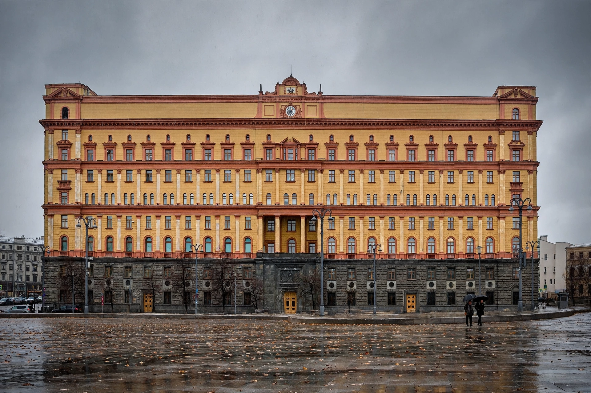

| NKVD | |
|---|---|
| Full name | People's Commissariat for Internal Affairs |
| Formed | 10 July 1934 |
| Dissolved | 1946 (became the MVD; state security split as the MGB) |
| Headquarters | Lubyanka Building, Moscow |
| Directors | Genrikh Yagoda (1934–36), Nikolai Yezhov (1936–38), Lavrentiy Beria (1938–46) |
The NKVD (Russian: НКВД, Народный комиссариат внутренних дел, Narodnyy Komissariat Vnutrennikh Del, "People's Commissariat for Internal Affairs") was the interior ministry and secret police of the Soviet Union from 1934 to 1946. It conducted the Great Purge under Joseph Stalin, ran the Gulag forced-labour camp system, and carried out mass deportations and executions, including the Katyn massacre of Polish officers in 1940.

The NKVD was created in 1934, absorbing the OGPU political police as its Main Directorate of State Security (GUGB) alongside the regular police (militsiya), border troops, fire services and the Gulag administration. Under Nikolai Yezhov (the period remembered as the Yezhovshchina), the NKVD executed the Great Terror of 1936–1938: NKVD Order No. 00447 of July 1937 set regional quotas for arrests and executions of "anti-Soviet elements," and at least 681,692 people were shot in 1937–38 alone. Extrajudicial three-person panels (troikas) issued sentences without legal process. Lavrentiy Beria, who replaced Yezhov in 1938, wound down the mass operations; Yezhov was himself shot in 1940.
During the Second World War the NKVD deported entire nationalities accused of collaboration — including Chechens, Ingush, Crimean Tatars and Volga Germans — to Central Asia and Siberia, guarded the rear areas, ran blocking detachments, and (through its SMERSH counter-intelligence and successor organs) filtered repatriated Soviet citizens. In 1946 the people's commissariats were renamed ministries: the NKVD became the MVD, while state security passed to the MGB, an ancestor of the KGB (1954).
Great Purge · Gulag · Lavrentiy Beria · Katyn massacre · KGB